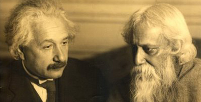

El ledes hjem Indio Rabindranath Tagore, hvem dette 7 Maj markerer årsdagen 150 for hans fødsel, proklamerede: "Unite, ikke på trods af vores forskelligheder, men disse. At alle menneskeracer bevarer deres egen personlighed og alligevel-til-slutte.
Luis Hernández Serrano
Når den kinesiske digter Xu Shimo spurgte, om at bryde Rabindranath Tagore havde efterladt noget bag, sagde: "Ja, mit hjerte ".

I december 1901 Tagore på Santiniketan oprettet en skole med kun fem elever, et barn. Han troede, at manden kom ind i verden for at opfylde dette råd af Gud: "Express Yourself!». Han forsikrede, at en person ikke kunne være en god lærer, hvis han huskede den dreng, som havde været. "De finere ting i livet, sagde han, aldrig kan blive undervist i et klasseværelse. Børn absorbere fra omgivelserne, eller personligheder rundt om dem ".Som skaberen forfattet musikalske melodier og tekster til de sange hedder brudt, og erklærede, at den ideelle sangen er et perfekt ægteskab af ord og musik. Han komponerede 62 patriotiske sange og nationalmelodier i Indien og Bangladesh, plus 150 og andre kærlighedssange 140 om stationer.
"Folk i dag er i stigende grad forbundet. Vi må indse dette og forstå, at vores nabolag bør være baseret på kærlighed. Øst og Vest skal slutte hænder at søge sandheden ".
Sanskrit civilisation dækket, Engelsk kultur og folklore Bengali, tilføjelse til familien tilhørsforhold med islamiske traditioner og persisk litteratur. Han havde skrevet: "Jeg er blevet min version af, hvad der er at være optimistisk. Hvis jeg ikke kan passere en dør, Jeg vil til en anden eller en dør ".
Han brød et monopol
Det var i 1913 når digteren og filosoffen Asien vandt Nobelprisen, med som hans ry spredtes hurtigt ud over Himalaya, og endte monopol Vesten prisen. Han sagde, at "Man har henvendt sig, hvad der var fjernt. Har synliggjort det usynlige. Og han har givet udtryk for svære at forstå ".
Født i Jorasanko, Calcutta, den 7 Maj 1861. Det var den fjortende barn af Maharshi Debendranath Tagore og Sarada Devi.
Det begyndte som en digter og forfatter blev magtfulde, pædagog, komponist, maler, foredragsholder, social reformator og filosof.
Tradujo Macbeth, de Shakespeare, til 13 år og blev en produktiv forfatter og tosprogede, til at omsætte deres egne værker til engelsk.
Hans offentliggjorte oversættelser genvundet Indien Society of London i en bog under titlen Gitanjali (Udbuddet Lyrics), den første November 1912. I indledningen, Engelsk digter W. B. Yeats (1865-1939), sagde: "Disse prosa oversættelser har forårsaget mit blod, som intet har i årevis".
Rural Builder
Han kæmpede til genopbygning af landsbyer i nærheden af skolen, han grundlagde i 1901 i og omkring Santiniketan International University Visva-Bharati, som han grundlagde i 1921, syd for den bengalske landet.
Tænkte for første gang i forløsende de fattige som en leder, da han flyttede til familiebrug, East Bengal, i årti af det 90 nittende århundrede.
Med 30 Han var allerede en kendt digter, men kun havde boet i Calcutta. Han boede i Silaidah, Nadia-distriktet, på bredden af den mægtige flod Padma. Denne erfaring forvandlet ham til et humanistisk og handlingens mand.
"De behov for mit arbejde tog mig med at gå lange afstande fra landsby til landsby-of-Patisar Silaidah til store og små floder, krydsende vådområder. Så jeg vidste, hvordan de levede, Jeg kom til at have en klar idé om smerte og lidelse fattigdom, og begyndte at gøre noget for dem. Det var pinligt, at jeg bruger dagen som en grundejer, vedrørte kun at øge mine egne fortjenester ".
Til fordel for kvinder
Tagore beskrev situationen for kvinder, der lever, og påståede årsager gennem breve, historier, essays og romaner, dem uafhængigt. Senere, med deres handlinger, og at indrømme piger i skole Santiniketan, blev innovativ pioner coeducation.
Hans bedstefar, Dwarkanath Tagore (1794-1846), efter hans rejse til Europa, kaldes fra 1842 til uddannelse og sociale reformer kvindelige. Og hans far (1817-1905), Bethune skole understøttes (af kvindelige uddannelse) og tillod deltagelse af deres døtre og andre piger i familien i forskellige former for uddannelse og socialt arbejde. Også, Gnanadanandini, kone sin bror Satyendranath, blev en moderne kvindelig rollemodel, redesignet for kjolen af bengalske kvinder og rejste til England med sine tre børn, ledsaget af sin mand. I hans breve fra London, Tagore udtryk for behovet for kvinder i deres land blev selvstændigt.
"Mænd har det sjovt på mange måder verden udenfor, mens kvinderne er som husdyr, lydigt lænket til væggene i de dybeste kamre i husene '.
Uforbederlig rejsende
Rabindranath ville blive bekendt med andre kulturer. "Jeg er en rejsende fra en endeløs vej ', skrev. Han rejste meget i Europa, Amerika og Asien i forskellige stadier af livet, og lad det notationer i talrige breve, dagbøger og refleksioner.
I 1924 havde rejst gennem byerne Shanghai Kina, Beijing, Nanking y Chufu, og besøgte graven af Confucius. For Sydamerika mødtes i Buenos Aires, Og San Isidro Chapadmalal. Blev syg og havde til huse hjemme hos Victoria Ocampo (1890-1979). Fra dette øjeblik, i 1929, begyndte sin karriere som kunstmaler.
I 1926 besøgte Italien, men indse, at han lænede sig over mod fascismen, heftigt fordømt den italienske regering. Han gik til Oslo, Beograd, Bukarest, Athen og Cairo. Tyskland var i kontakt med Albert Einstein.
Så rejste over hele Indien. På sin sidste rejse tilbage til Kolkata fra Santiniketan, i 1941. Så han skrev sit berømte essay Crisis of Civilization, hvor han så de mørke skyer af krig og ødelæggelse hængende over hele verden. Han rejste, i den ende, at advare om farerne for nationalisme, fascismo og imperialisme. I et brev til sin datter, sagde: "Jeg føler en uro, som dominerer mig ... Verden er imod mig, og jeg vil byde verden ".
Han opfordrede til, at alle barrierer for at blive vej, og dømt: "Unite, ikke på trods af vores forskelligheder, men disse. At alle menneskeracer bevarer deres egen personlighed og alligevel-til-slutte, ikke i en ensartet dødt, men i en levende enhed ".
Han sagde, at han sov og drømte, at livet var glæde. Det vågnede op og indså, at livet var at tjene.
Den 25 Juli 1941 blev alvorligt syg og blev bragt til Calcutta. Han døde 7 August, til 80 år. Kort før sin død, sagde: "Medmindre vi ser det uendelige resten, og kun bemærket den uendelige bevægelse, så er der en ondskab, der løber hovedkulds ind i evig nonsens '.
Kilde: Indien Perspektiv Magazine, Volumen 24, Ikke. II, 2010, redigeret af Navdeep Suri.
Seneste kommentarer